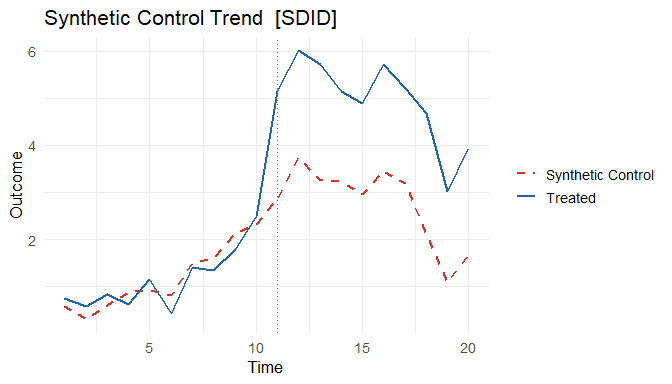
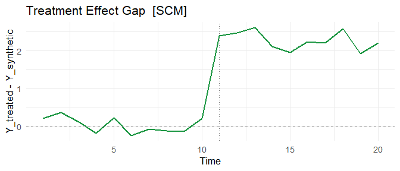
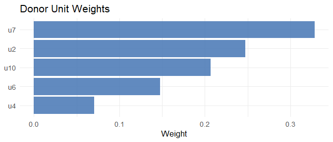

coresynth is a high-performance R package that provides six causal inference methods for panel data through a unified formula interface. All core optimizations (QP solving, SVD, Kalman filtering) are implemented in C++ via RcppArmadillo, so estimation stays fast even on larger donor pools (see the Performance section for timings).
Installation
# From GitHub (requires Rtools on Windows, Xcode on macOS)
pak::pak("yo5uke/coresynth")
# Via devtools
devtools::install_github("yo5uke/coresynth")Quick Start
library(coresynth)
# Generate a balanced panel (10 units, 20 periods, true ATT = 2.0)
set.seed(42)
N <- 10; TT <- 20; T_pre <- 10
f <- cumsum(rnorm(TT, 0, 0.5))
lam <- rnorm(N, 1, 0.3)
dat <- expand.grid(time = seq_len(TT), id = paste0("u", seq_len(N)))
dat$y <- as.vector(outer(f, lam)) + rnorm(nrow(dat), 0, 0.3)
dat$d <- as.integer(dat$id == "u1" & dat$time > T_pre)
dat$y[dat$d == 1] <- dat$y[dat$d == 1] + 2.0 # true ATT = 2
# Run all six methods
methods <- c("scm", "sdid", "gsc", "mc", "tasc", "si")
fits <- lapply(methods, \(m) scm_fit(y ~ d | id + time, data = dat, method = m))
names(fits) <- methods
# Compare ATT estimates (true value = 2.0)
data.frame(
method = methods,
estimate = round(sapply(fits, `[[`, "estimate"), 3)
)
#> method estimate
#> scm scm 2.271
#> sdid sdid 2.150
#> gsc gsc 2.255
#> mc mc 2.696
#> tasc tasc 1.154
#> si si 2.346
# SDID trend plot (observed vs. synthetic)
plot(fits$sdid, type = "trend")
# SCM gap plot (treatment effect over time)
plot(fits$scm, type = "gap")
# SCM donor weights
plot(fits$scm, type = "weights")
Supported Methods
| Method | Reference | Treatment | Covariates | Inference |
|---|---|---|---|---|
scm |
Abadie, Diamond & Hainmueller (2010) | Sharp & Staggered |
pred() list |
mspe_ratio_pval(), conformal_inference()
|
sdid |
Arkhangelsky et al. (2021) | Sharp & Staggered | covariates= |
sdid_inference(), conformal_inference()
|
gsc |
Xu (2017) | Sharp & Staggered |
covariates= time-varying |
gsc_boot(), gsc_inference(), conformal_inference()
|
mc |
Athey et al. (2021) | Sharp & Staggered | — | conformal_inference() |
tasc |
Rho et al. (2026) | Sharp & Staggered | — | — |
si |
Agarwal et al. (2025) | Sharp, Staggered & Multi-arm | — |
si_inference(), conformal_inference()
|
conformal_inference() (Chernozhukov, Wüthrich & Zhu 2021) provides permutation-based p-values and confidence intervals for sharp fits across scm/sdid/gsc/mc/si.
Staggered Adoption
All six methods support staggered adoption using a cohort-based approach (Clarke et al. 2023): each adoption cohort is fitted separately and the cohort ATTs are aggregated with weights proportional to N_treated × T_post.
# u1: treated from t=11, u2: treated from t=16
dat_s <- dat
dat_s$d <- 0L
dat_s$d[dat_s$id == "u1" & dat_s$time > 10] <- 1L
dat_s$d[dat_s$id == "u2" & dat_s$time > 15] <- 1L
dat_s$y[dat_s$d == 1] <- dat_s$y[dat_s$d == 1] + 2.0
# All methods detect staggered timing automatically
fit_sdid <- scm_fit(y ~ d | id + time, data = dat_s, method = "sdid")
fit_gsc <- scm_fit(y ~ d | id + time, data = dat_s, method = "gsc")
fit_mc <- scm_fit(y ~ d | id + time, data = dat_s, method = "mc")
fit_si <- scm_fit(y ~ d | id + time, data = dat_s, method = "si")
# Cohort-level estimates are accessible
fit_sdid$cohort_estimates
#> cohort estimate weight n_treated T_pre T_post
#> 1 11 1.97 0.667 1 10 9
#> 2 16 2.03 0.333 1 10 4
# control_group = "clean" (default) uses never-treated + future-adopters as donors
# control_group = "never_treated" restricts to never-treated only
fit_sdid_clean <- scm_fit(y ~ d | id + time, data = dat_s, method = "sdid",
control_group = "never_treated")Covariates
SCM: Predictor Variables via pred()
SCM supports covariate-based matching following Abadie et al. (2010) §2.3. Use pred(vars, times, op) to specify which variables and time windows to include in the predictor matrix:
# Assume dat has extra columns: income, unemp
fit_scm_cov <- scm_fit(
y ~ d | id + time,
data = dat,
method = "scm",
predictors = list(
pred(c("income", "unemp"), 1:8), # average income & unemp over pre-period
pred("y", 5), # outcome at a specific pre-treatment year
pred("y", 1:4, op = "mean") # outcome averaged over early pre-period
)
)
summary(fit_scm_cov) # shows predictor balance tableEach pred() call aggregates one or more variables over a time window using op = "mean" (default), "median", or "sum". Multiple pred() calls with different windows can be combined freely in the list.
GSC: Time-Varying Covariates
GSC supports time-varying covariate adjustment via the full EM algorithm of Xu (2017). Pass a character vector of column names as covariates:
# Assume dat has a time-varying column: gdp_growth
fit_gsc_cov <- scm_fit(
y ~ d | id + time,
data = dat,
method = "gsc",
r = 2,
covariates = "gdp_growth"
)
fit_gsc_cov$beta # estimated beta coefficient(s)The EM loop alternates between:
- E-step: SVD of to update factors ,
- M-step: Ridge OLS of residuals on to update
Treated unit loadings are estimated from covariate-demeaned pre-treatment data per Xu (2017) Step 2. When covariates = NULL (default), the plain 3-step SVD estimator () is used.
Inference
# SCM: MSPE ratio placebo test (Abadie et al. 2010)
scm_p <- mspe_ratio_pval(fits$scm)
cat("p-value:", scm_p$p_value, "\n")
# SDID: four inference methods — placebo, bootstrap, jackknife, jackknife_global
sdid_inf <- sdid_inference(fits$sdid, method = "placebo")
tidy(sdid_inf) # broom-style one-row data.frame
sdid_boot <- sdid_inference(fits$sdid, method = "bootstrap", n_boot = 200, seed = 1)
tidy(sdid_boot)
# GSC: parametric bootstrap under H0 (sharp only)
gsc_ci <- gsc_boot(fits$gsc, B = 200, alpha = 0.05)
cat("95% CI: [", gsc_ci$ci_lower, ",", gsc_ci$ci_upper, "]\n")
# GSC / SI: non-parametric inference (sharp + staggered)
gsc_inf <- gsc_inference(fits$gsc, method = "jackknife")
si_inf <- si_inference(fits$si, method = "bootstrap", n_boot = 200, seed = 1)
tidy(gsc_inf)
tidy(si_inf)
# Conformal inference (Chernozhukov, Wüthrich & Zhu 2021) — sharp fits for
# scm / sdid / gsc / mc / si. Re-estimates the counterfactual under the null
# and inverts a moving-block permutation test for a p-value and CI.
conf <- conformal_inference(fits$scm, tau0 = 0, level = 0.95)
tidy(conf)tidyverse / broom Integration
library(broom)
# Extract weights as a data frame
tidy(fits$scm)
# Summary row
glance(fits$scm)
# JSON export (for reproducibility and AI workflows)
export_json(fits$scm, file = "scm_result.json")Performance
Estimation stays fast even as the donor pool grows. SCM fit times (Windows 11 / R 4.6.0 / GCC 14.2.0):
| N_co | T_pre | coresynth |
|---|---|---|
| 16 | 10 | 105 ms |
| 20 | 20 | 72 ms |
| 50 | 30 | 916 ms |
| 100 | 40 | 6,300 ms |
A full SCM fit on a 100-donor pool completes in a few seconds.
References
- Abadie, A., Diamond, A., & Hainmueller, J. (2010). Synthetic control methods for comparative case studies. JASA, 105(490), 493–505.
- Agarwal, A., Shah, D., & Shen, D. (2025). Synthetic interventions: extending synthetic controls to multiple treatments. Operations Research. doi:10.1287/opre.2025.1590
- Arkhangelsky, D., Athey, S., Hirshberg, D. A., Imbens, G. W., & Wager, S. (2021). Synthetic difference-in-differences. AER, 111(12), 4088–4118.
- Athey, S., Bayati, M., Doudchenko, N., Imbens, G., & Khosravi, K. (2021). Matrix completion methods for causal panel data models. JASA, 116(536), 1716–1730.
- Chernozhukov, V., Wüthrich, K., & Zhu, Y. (2021). An exact and robust conformal inference method for counterfactual and synthetic controls. JASA, 116(536), 1849–1864.
- Rho, H., et al. (2026). Time-aware synthetic control. Working paper.
- Xu, Y. (2017). Generalized synthetic control method. Political Analysis, 25(1), 57–76.